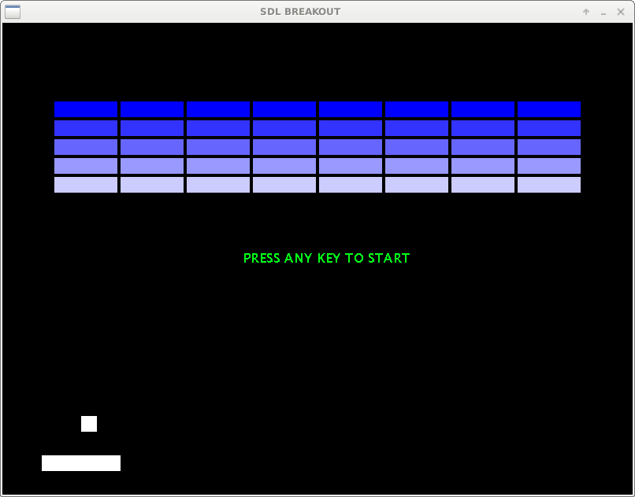

NATHAN242's Projects
Projects
Tools
Libraries
Project repo: LINK
Breakout game I created using C++ and SDL. It is based on the physics and graphics code used in SDL-Pong.
Use the arrow keys to move your paddle left and right or press Q to quit. Currently there is no concept of lives and the game will still continue once all the blocks have been destroyed. I hope to implement those features when I get time.